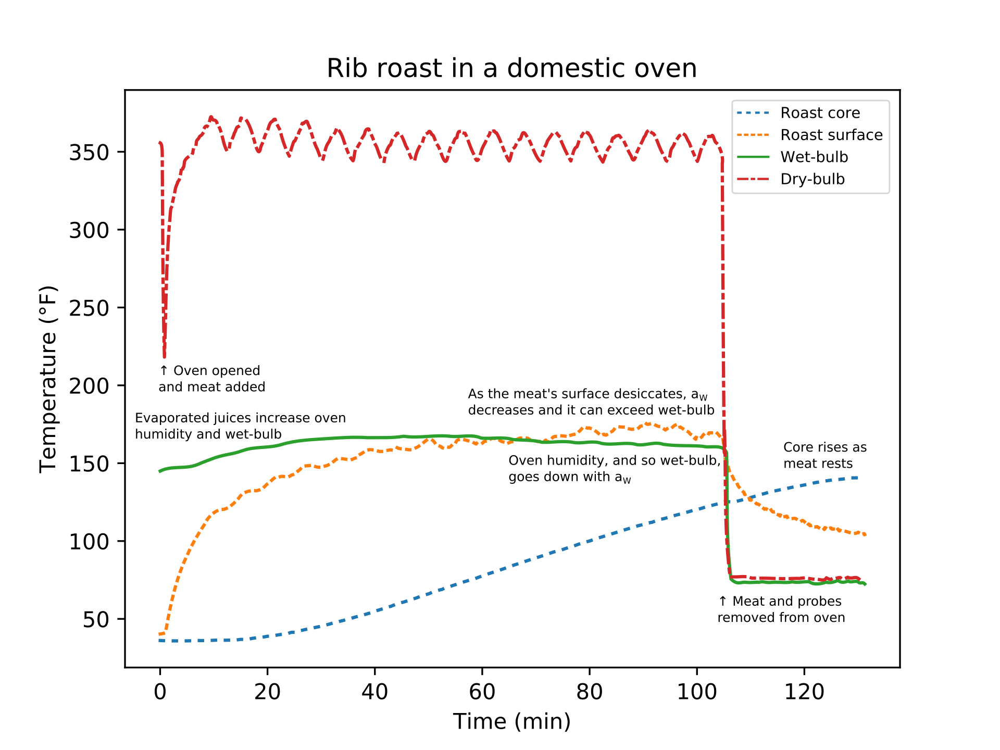

Meat is a complex structure of roughly 75% water, 20% protein, and 5% fat and other substances. This poses some challenges modeling heat transfer from frozen to thawed meat, from raw to cooked meat, and for searing the surface.
Cooking raw meat can be thought of in terms of denaturing proteins. There are several ways to denature proteins in the kitchen — including mechanical agitation when whipping egg whites, using acids like vinegar and lemon juice, curing with inorganic salts, alcoholic marinades, and cleaning with detergents — but cooking mainly uses heat. It's convenient to group meat's proteins into muscle fibers (mostly myosin and actin), soluble proteins (mostly enzymes and myoglobin), and connective tissue (mostly collagen). When heating, the muscle fibers can shrink, the water-soluble proteins can aggregate and gel, and connective tissue can shrink and solubilize depending on the time at different temperatures. As it heats, first the muscle fibers start to shrink around 35 to 40 °C; this shrinking increases up to about 80 °C, and squeezes a significant amount of water out of the meat. The soluble proteins start aggregating and gelling around 40 °C and mostly finish around 60 °C. This gelling firms the meat, so medium and medium-rare meat is less chewy than rare meat. The connective tissue starts shrinking a bit above the animal's body temperature and noticeably around 60–65 °C. Most connective tissue is collagen, and further heating with adequate moisture can dissolve some of it into gelatin, more in younger animals and less in older animals. For more on the chemistry of meat, see Tornberg (2005).
This denaturing of proteins correspond with the cook's concept of doneness. Meat is rare around 50 °C, medium-rare around 55 °C, medium around 60 °C, and well-done over about 70 °C. The muscle fibers start to shrink for rare meat and some soluble proteins denature. Between medium-rare and medium, more soluble proteins denature but the connective tissue has not shrunk substantially. For well-done, the soluble proteins have mostly denatured — changing the meat's color by scattering light so it's opaque and grayish — and the muscle fibers have squeezed a significant amount of water from the meat. For meat with significant amounts of fat marbling and connective tissue, holding the meat at 70 °C and above will dissolve a significant amount of collagen into gelatin and release melted fat to lubricate the muscle fibers when chewing to give it succulence. The temperatures corresponding to rare, medium, and well-done are about 5 °C higher in poultry and about 10 to 15 °C lower in fish. This temperature difference roughly correspond to the difference in the animal's body temperature, possibly because the chemistry used in the animal's biology is naturally selected to its body temperature.
Let's consider the following partial differential equation to model heat transfer in meat:\[ \frac{\partial T}{\partial t} = \nabla \cdot (\alpha \nabla T), \qquad (1) \] where \(T\) is temperature (°C) and \(\alpha\) is the thermal diffusivity (m²/s). If we know the initial temperature distribution, we can estimate how \(\alpha\) changes with temperature, time, and location, and can describe how the surface temperature changes, then we can uniquely determine the temperature in the future.
Because of meat's complex structure, we'll need to make many simplifications to and assumptions about Eq. (1) to solve it in practice. First, we'll assume that \(\alpha\) does not depend on position, that we can average locally over muscle fibers, fat, cartilage, bone, and so on, even though they have different thermal diffusivities. Next we'll assume that \(\alpha\) does not depend on time, so we assume that mass transfer and protein denaturation causes negligible effects to heat conducted through the meat. For example, salt diffusivity in meat at room temperature is 5–10E-10 m²/s compared with meat's thermal diffusivity of 1–2E-8 m²/s; so while important over longer times, we can neglect mass transfer over shorter times. Indeed, mass transfer is essential when browning meat: the surface must desiccate so the temperature can exceed water's boiling point to then brown the surface and create roasty and savory volatile flavor compounds.
Even assuming that \(\alpha\) only depends on temperature, Eq. (1) is challenging to solve for arbitrary shapes and boundary conditions. If mainly concerned with the meat's surface and core temperatures, we can approximate Eq. (1) with a one-dimensional heat equation using an effective dimension \(E\). So using \(\alpha\equiv k/(\rho C_p)\), where \(k(T)\) is thermal conductivity (W/mK), \(\rho\) is density (kg/m³), and \(C_p(T)\) is the specific heat (kJ/kg-K) gives: \[ \rho C_p(T) \frac{\partial T}{\partial t} = k(T) \left[ \frac{\partial^2 T}{\partial r^2} + \frac{E - 1}{r} \frac{\partial T}{\partial r} \right], \qquad (2) \] \[ T(r, t=0) = T_0, \qquad \frac{\partial T}{\partial r}(r=0, t) = 0, \qquad (3) \] \[ k(T) \frac{\partial T}{\partial r}(r=R, t) = h\left( T_{fluid} - T(r=R,t) \right) + K_m L \left( P_{v,fluid} - a_w P_{v,surface}\right), \qquad (4) \] where \( 0 \le r \le R\), \(t \ge 0\), \( T_0 \) is the initial temperature, \(T_{fluid}\) is the fluid (air, steam, water, or oil) temperature around the meat, \(h\) is the heat transfer coefficient (W/m²-K), \(K_m\) is the mass transfer coefficient (kg/m²-s-Pa), \(a_w\) is water activity at the meat's surface, \(P_{v,fluid}\) is partial water vapor pressure away from the food and \(a_w P_{v,surface}\) at the food's surface (Pa), and \(L\) is the latent heat of evaporation for water (J/kg). For a slice of ham or a steak, the shortest path for heat is from the top and bottom, so the effective dimension is about \(E\approx 1\); similarly, for a tenderloin the shortest path to the core is in two dimensions, and so \(E \approx 2\); for a meatball, the shortest path is in all three dimensions, so \(E \approx 3\). Practically, \(1 \le E = t_{slab}/t \le 3\), where \(t\) is the heating time and \(t_{slab}\) is the heating time for an infinite slab under the same, constant conditions. Moreover, \( E = 1\), 2, and 3 exactly correspond to the heat equation in cartesian, cylindrical, and spherical coordinates with radial symmetry.
The boundary condition, Eq. (4), explains many counter-intuitive experiences. For example, let's consider barbecue stall, where the meat's temperature goes up and then stalls around 65 to 75 °C, often for hours, before climbing up to 85 to 90 °C. At these temperatures, \(k(T)\) is essentially constant, so we just need to look at the right hand side (RHS) of Eq. (4). Initially, the RHS is positive, so the meat's surface temperature increase; the first term, \(h (T_{fluid} - T(R,t)),\) dominates this increase, while in high humidity environments condensing steam often dominates. Then evaporative cooling starts to slow the temperature increase until the RHS is close to zero. The second term \(K_m L ( P_{v,fluid} - a_w P_{v,surface})\) is negative because \(P_{v,fluid} < a_w P_{v,surface}\) and balances the first term, stalling the cook at around 65 to 75 °C. Decreasing the air's relative humidity (decreasing \(P_{v,fluid}\)), increasing the airflow (increasing \(K_m\)), mopping the meat (increasing \(a_wP_{v,surface}\)), and lowering the air temperature \(T_{fluid}\) all lower the stall temperature. Increasing the air temperature, increasing the airflow, and reducing the air's relative humidity shortens the stall. The RHS becomes positive after the stall because the surface desiccates (decreasing \(a_w\)), and so the surface can approach the air temperature — but below the desiccated layer is another wet region that is below the boiling point.
If we assume that the water activity at the meat's surface is \(a_w > 0.99\), so it has not started to desiccate, then the meat's surface temperature asymptotes to the wet-bulb temperature. Then instead of Eq. (4), we can instead consider the approximation \[ k(T) \frac{\partial T}{\partial r}(r=R, t) = \hat{h}\left( T_{w.b.} - T(r=R,t) \right), \] where \(T_{w.b.}\) is the wet-bulb temperature of the fluid (air, steam, or water) and \(\hat{h}\) is the effective heat transfer coefficient. When poaching, steaming, boiling, or sous-vide cooking, the wet- and dry-bulb temperatures, \(T_{w.b.} = T_{fluid}\), are the same. In air that is not saturated with water, such as in ovens and smokers, the wet-bulb temperature is often much lower than the dry-bulb temperature, see Figure 1; the wet-bulb in a commercial convection oven might be 80 to 90 °C when the dry-bulb is 150 to 200 °C. The lower the air's relative humidity, the larger the difference between the wet- and dry-bulb. Indeed, the difference between wet- and dry-bulb temperatures is a common method for measuring relative humidity. Modern convection steam ovens allow steam injection to increase the wet-bulb temperature to near the dry-bulb temperature between about 65 and 90 °C, and so increase the rate of cooking. Likewise, increasing the difference between the dry- and wet-bulb increases the evaporation and leads to the surface desiccating. The magnitude of \(\hat{h}\) can also give intuition about how the meat will cook: in ovens, with natural and forced convection, the magnitude is relatively low and variations between ovens can result in significantly different heating times. But the magnitude of \(\hat{h}\) is relatively high in sous-vide baths, convection steam ovens near 100% relative humidity, deep-fat fryers, and so on, and so heating times are consistent and predictable.

Figure 1: A boneless beef rib roast on a rack in a roasting pan was placed in domestic oven set to 350 °F (175 °C). Four thermocouples were used to collect temperature data: a needle-type probe with the tip near the meat's core, another just below the meat's surface, another in the air (the dry-bulb), and the last in the top of a sponge with the bottom of the sponge in water so wicking kept it wetted to approximate an ideal wet-bulb measurement. When the oven door is opened, the air temperature rapidly drops and then recovers after about 10 minutes. The meat's surface temperature increases quickly and then slows as it approaches the wet-bulb temperature. The evaporating juices cool the meat's surface and also increase the oven's relative humidity, which slightly raises the wet-bulb temperature. Around 1 hour, the surface has desiccated enough that it can exceed the wet-bulb temperature. When the meat's core reached 125 °F (52 °C), the roast was removed from the oven; residual heat continued to diffuse and raise the core temperature to 140 °F (60 °C) despite the surface rapidly cooling to 105 °F (40 °C).
Now that we understand the boundary condition, let us return to the heat equation, Eq. (2). While the meat's thermal conductivity, \(k(T)\), and specific heat, \(C_p(T),\) depend on temperature and have nonlinearities associated with freezing and desiccation, they are essentially constant for thawed meat. So we can simplify Eq. (2) to \[ \frac{\partial T}{\partial t} = \alpha \left[ \frac{\partial^2 T}{\partial r^2} + \frac{E-1}{r} \frac{\partial T}{\partial r} \right]; \] if we change variables so \(t\to t\lambda\) and \(r\to r\zeta\), then we get \(\lambda^{-1} \frac{\partial T}{\partial t} = \zeta^{-2} E \left[ \frac{\partial^2 T}{\partial r^2} + \frac{E-1}{r} \frac{\partial T}{\partial r} \right]\) and so \(\lambda = \zeta^2 E^{-1}\). Thus, a sphere with \(E = 3\) takes a third as long as a slab with \(E = 1\) and doubling the thickness \(\zeta = 2\) quadruples the time. So the meat's characteristic thickness, \(R,\) has a huge affect on the cooking time. This can also be seen from the meat's thermal diffusivity, which is between 0.12 and 0.16 mm²/s (Nicolaï and Baerdemaeker, 1996): to estimate the minimum cooking time for a 30 mm steak, heating from both top and bottom, is \((15 mm)^2 [(0.16 mm^2/s)(60 s/min)]^{-1} = 23.4 \) to \( (15 mm)^2 [(0.12 mm^2/s)(60 s/min)]^{-1} = 31.3\) minutes. Using Eqs. (2) to (4) to compute how the meat heats is complicated and is best done with already tested and validated computer code.
Unlike pure water, all the water in meat doesn't freeze at 0 °C: As ice forms, the remaining solution becomes more concentrated with salts, sugars, and other solutes. As the meat cools further, some of the solutes crystallize out of solution and it is a mix of ice, solution, and solute. As the meat cools still further, the solution reaches a maximal freeze concentration and transforms into a rubber state; cooling further, the rubber state transforms to a glassy state. Frozen meat and fish are very stable in the glassy state, and is used to store some high-value products. Differences in fat and other substances between species and muscles affect these transition temperatures, as well as other thermophysical properties. Generally, product quality is maximized by freezing and thawing quickly and storing high-value items in the glassy state. For example, using liquid nitrogen or dry ice to make ice creams with small ice crystals, or storing tuna for sushi in the glassy state below about -55 °C. For a review on predicting freezing, see Delgado and Sun (2001).
Once the surface sufficiently desiccates, the water activity \(a_w\) decreases, and its temperature exceeds 130 °C, then the Maillard reaction between amino acids and reducing sugars starts browning the surface and developing roast and savory flavors. The Maillard reaction starts noticeably around 130 °C and good browning occurs over 150 °C, with the rate increasing with temperature. Increasing the amount of reducing sugar, like glucose, also increases the reaction rate in meat because reducing sugars are relatively less available than amino acids. This is why meat with a sweet glaze browns so quickly. The browning rate also increases as the water activity \(a_w\) decreases.
There are many ways to brown the meat's surface: searing in a dry pan, shallow- and deep-fat frying, using a gas or charcoal grill, using a salamander or broiler, roasting in an oven, and so on. Returning to Eq. (4), we see that many of these methods use a high cooking temperature (a high \(T_{fluid}\)) and low partial water vapor pressure (low \(P_{v,fluid}\)) to increase evaporation and make a desiccated surface layer. When frying with fat, for example, the partial water vapor is essentially zero except for the water coming out of the meat's surface. It's also why basting with fat increases the wet-bulb temperature as the fat coats the surface, and thus increases the amount of evaporation that leads to the surface desiccating.
A.E. Delgado and Da-Wen Sun. Heat and mass transfer models for predicting freezing processes – a review. J Food Eng, v. 47, pp. 157–174, 2001.
B. M. Nicolaï and J. De Baerdemaeker. Sensitivity analysis with respect to the surface heat transfer coefficient as applied to thermal process calculations. J of Food Eng, v. 28, pp. 21–33, 1996.
E. Tornberg. Effect of heat on meat proteins – implications on structure and quality of meat products. Meat Sci, v. 70, ppl. 493–508, 2005.
A modified version of this essay is in Handbook of Molecular Gastronomy: Scientific Foundations, Educational Practices, and Culinary Applications.